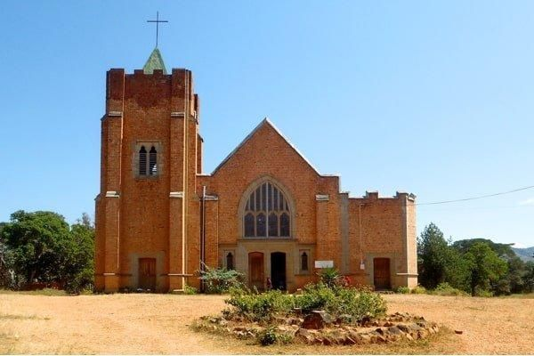
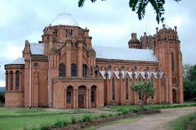
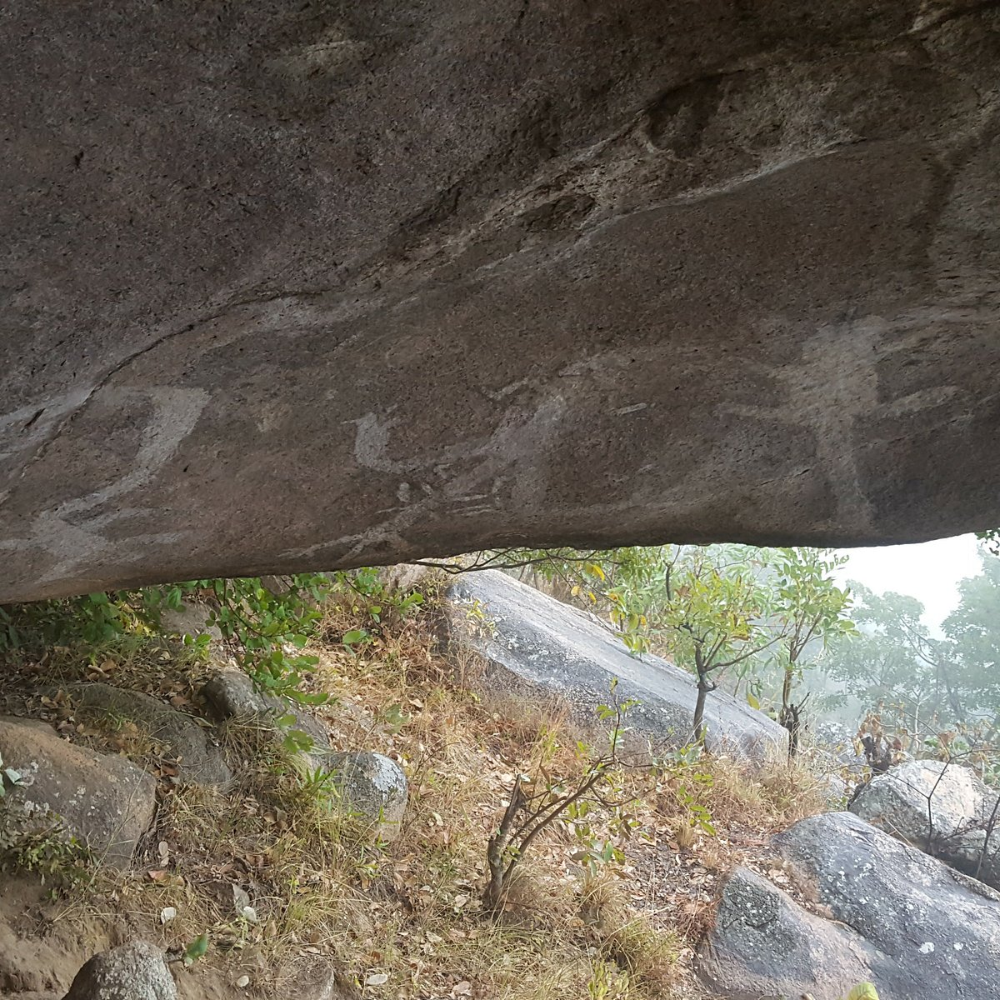

-

Livingstonia Mission
The Livingstonia Mission was founded in 1894 by Scottish missionaries led by Dr. Robert Laws. Located in northern Malawi, near the Nyika Plateau and overlooking Lake Malawi, the mission was established as a center for education, healthcare, and the spread of Christianity. It played a key role in introducing Western education and medical practices to the region while fostering local development.
-

St. Michael and All Angels Church
St. Michael and All Angels Church, located in Blantyre, Malawi, is a masterpiece of African Christian architecture. Built between 1888 and 1891 under the direction of Reverend David Clement Scott, the church was constructed using locally sourced materials and techniques. It stands as a symbol of resilience and ingenuity, blending Gothic architectural influences with traditional craftsmanship.
-

Chongoni Rock Art Area
The Chongoni Rock Art Area, located in central Malawi within the Dedza District, is a UNESCO World Heritage Site. It features a collection of rock art created by the Chewa and Batwa people, with some works dating back to the Stone Age. These paintings depict cultural rituals, daily life, and spiritual beliefs, offering invaluable insights into the region’s prehistoric and historic heritage.